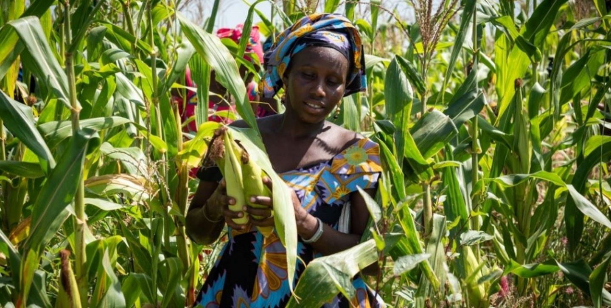

Economia da África: Panorama Atual e Perspectivas Futuras
A África é um continente rico em recursos naturais e diversidade cultural, formado por 54 países e mais de 1,4 bilhão de habitantes. Apesar de seu enorme potencial, a economia africana ainda enfrenta desafios históricos, como desigualdade social, dependência de exportação de commodities e falta de infraestrutura em muitas regiões.
PIB da África
Segundo dados do Banco Mundial (2024), o PIB total do continente africano é de aproximadamente US$ 3,3 trilhões, representando cerca de 3% da economia mundial.
Segundo dados do Banco Mundial (2024), o PIB total do continente africano é de aproximadamente US$ 3,3 trilhões, representando cerca de 3% da economia mundial.
Nigéria – petróleo, gás natural, tecnologia e serviços.
África do Sul – mineração, indústria e finanças.
Egito – turismo, agricultura, gás e construção civil.
Argélia – petróleo e gás natural.
Etiópia – agricultura e crescimento acelerado na indústria leve.
Principais Setores Econômicos
Agricultura (≈17% do PIB) Emprega mais da metade da população. Produtos em destaque: café, cacau, algodão, milho, frutas tropicais.
Indústria e Mineração (≈30% do PIB) Petróleo:
Nigéria, Angola e Líbia.
Ouro e diamantes: África do Sul, Gana, Botsuana.
Cobre e cobalto: Zâmbia e República Democrática do Congo.
Serviços (≈50% do PIB) Telecomunicações, bancos digitais, comércio e turismo.
Turismo é destaque no Egito, Marrocos, Quênia, Tanzânia e África do Sul.
Crescimento e Tendências
De acordo com o FMI (2024), a África cresceu em média 3,4% em 2024, superando a média global.
Entre as tendências mais promissoras estão:
Expansão tecnológica, com destaque para as fintechs (como o M-Pesa, no Quênia). Investimentos em infraestrutura, especialmente em transporte e energia, impulsionados por parcerias internacionais.
Acordo de Livre Comércio Continental Africano (AfCFTA), que busca integrar os mercados do continente.
Desafios Atuais
Apesar do crescimento, a África enfrenta: Altos índices de pobreza e desemprego, especialmente entre jovens. Dependência de exportação de matérias-primas.
Instabilidade política e conflitos em algumas regiões. Impactos das mudanças climáticas na agricultura e na água.
Futuro da Economia Africana
Com uma população jovem, urbanização crescente e avanços tecnológicos, a África tem grande potencial de expansão econômica. Investimentos em educação, saúde, infraestrutura e industrialização podem dobrar o PIB do continente até 2050, segundo o Banco Africano de Desenvolvimento (AfDB, 2024).
Fontes de Pesquisa
Banco Mundial – World Bank Data (2024)
Fundo Monetário Internacional – FMI (2024)
Banco Africano de Desenvolvimento – African Economic Outlook (2024)
ONU – UNCTAD Trade and Development Report (2023-2024)
Galeria